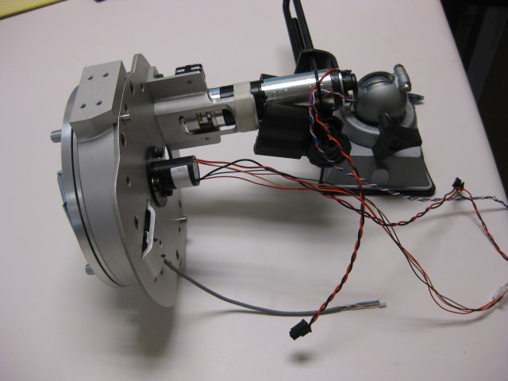
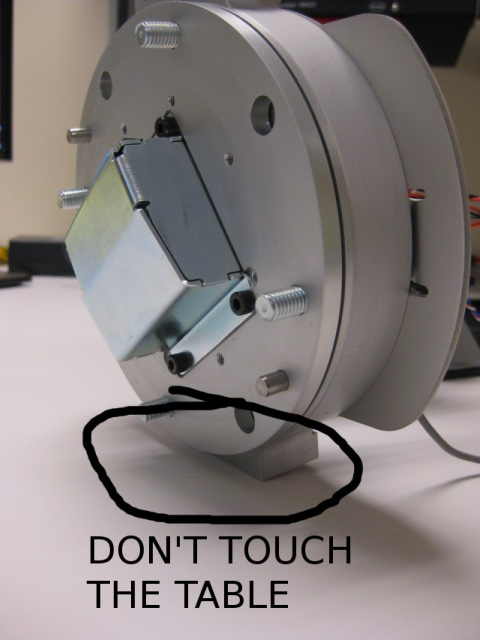
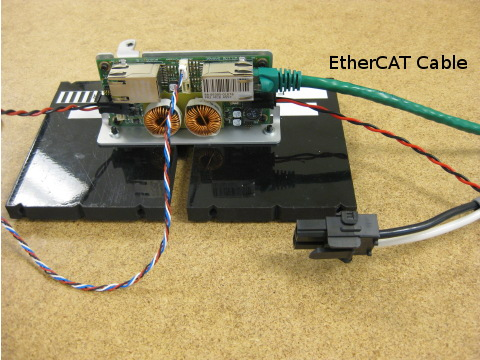

You must be grounded for the this step.
Mount the motor in the stand as shown. Connect the encoder, calibration and power cables to the appropriate spot on the motor board in the stand. Rest the assembly on its side on the bench.
Make sure the moving part of the hub doesn't touch the table.
Connect the green EtherCAT cable from the qualification bench to the MCB. Make sure the red and black power cable from the MCB to the power board is connected.
Press 'Continue' to proceed.